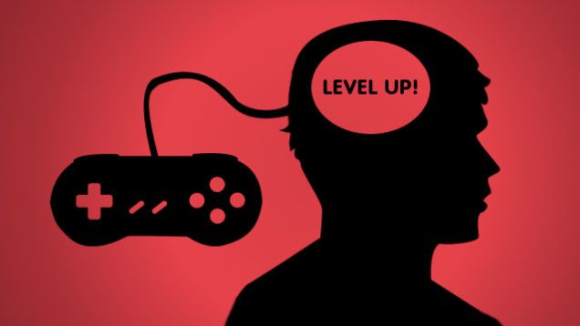

Some research points to attention difficulties as being a key component of dyslexia. One study has shown dyslexics improved their reading comprehension following sessions of games heavy on action. The reason, researchers believe, is that the games have constantly changing environments that require intense focus.
Because certain genres of games reward and encourage leadership traits—providing for “communities,” securing their safety, etc.—researchers have noted that players can display a correlating motivation in their real-world career goals. Improvising in a game can also translate into being faster on your feet when an office crisis crops up.
Many games use actual historical events to drive their stories. Those characters and places can then spark a child’s interest in discovering more about the culture they’re immersed in, according to researchers. Parents who have obtained books, maps, and other resources connected to games have reported their children are more engaged with learning, which can lead to a lifetime appreciation for history.
So-called “brain games” involving problem-solving, memory, and puzzle components have been shown to have a positive benefit on older players. In one study, just 10 hours of play led to increased cognitive functioning in participants 50 and older—improvement that lasted for several years.
We all know someone who seems to have a faster CPU than the rest of us, able to retrieve information or react in a split second. For some, that ability might be strengthened through gaming. Because new information is constantly being displayed during play, players are forced to adapt quickly. In one study, players who were immersed in fast-paced games were 25 percent faster in reacting to questions about an image they had just seen compared to non-players. 
While some games are thought to induce stress—especially when you see your character struck down for the umpteenth time—the opposite can be true. A major study that tracked players over six months and measured heart rate found that certain titles reduced the adrenaline response by over 50 percent.
Gamers using systems that incorporate the entire body to control onscreen movement have been shown to be more engaged in celebrating victories with their peers, which runs counter to the lack of communication people with autism sometimes present. A study also showed that sharing space with multiple players can also lead to increased social interaction for those with the disorder.